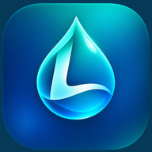

Kayıtların sana ait.
Su tüketimin, hedeflerin ve tercihlerin cihazında saklanır. LEOS, bunları geliştiriciye gönderen bir sunucu bağlantısı kullanmaz.

LeosHER YUDUM BİR ADIM.
Günlük su hedefini takip et. Küçük alışkanlıklarına yer aç.
Su tüketimin, hedeflerin ve tercihlerin cihazında saklanır. LEOS, bunları geliştiriciye gönderen bir sunucu bağlantısı kullanmaz.
Apple Sağlık bağlantısı ve hatırlatmalar, verdiğin izinlerle çalışır. Apple Sağlık bağlantısı olmadan da su kaydı tutabilirsin.
Ayarlar, bildirimler ve Apple Sağlık bağlantısı için kısa yanıtlar ve doğrudan iletişim bilgileri.
Yardım konularına bak →